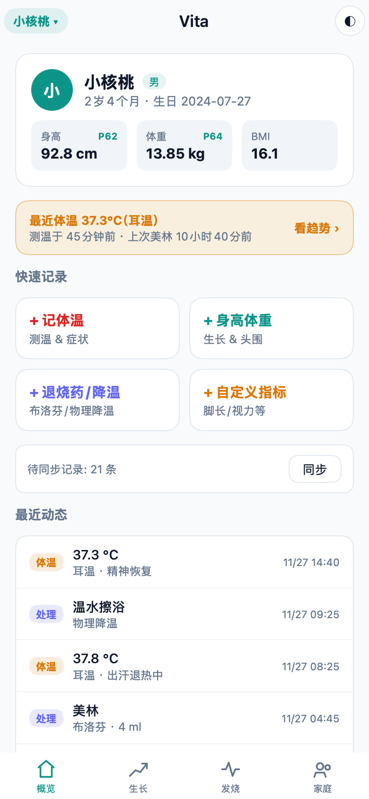
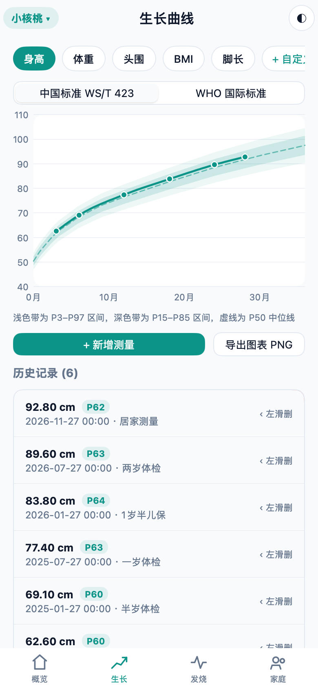
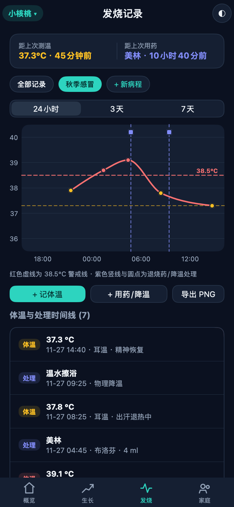
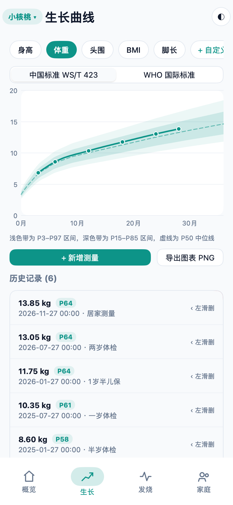
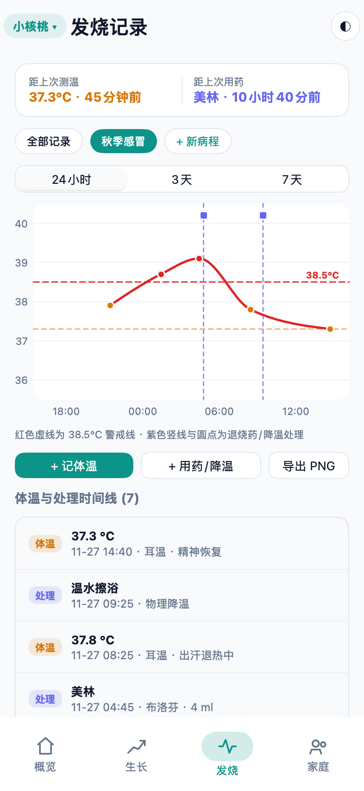
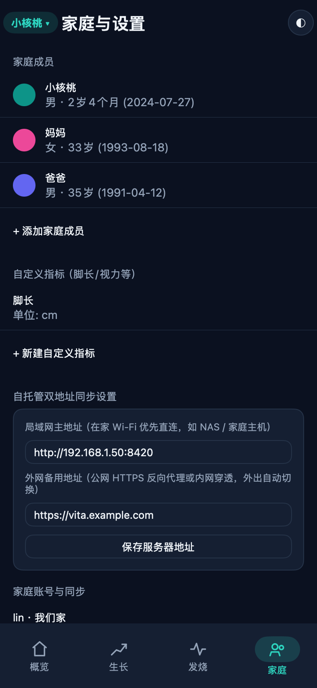
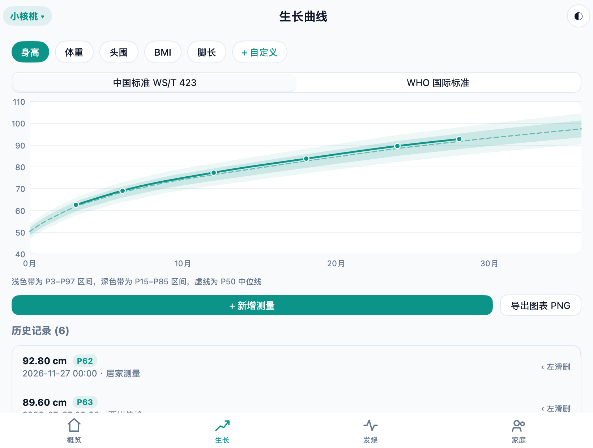
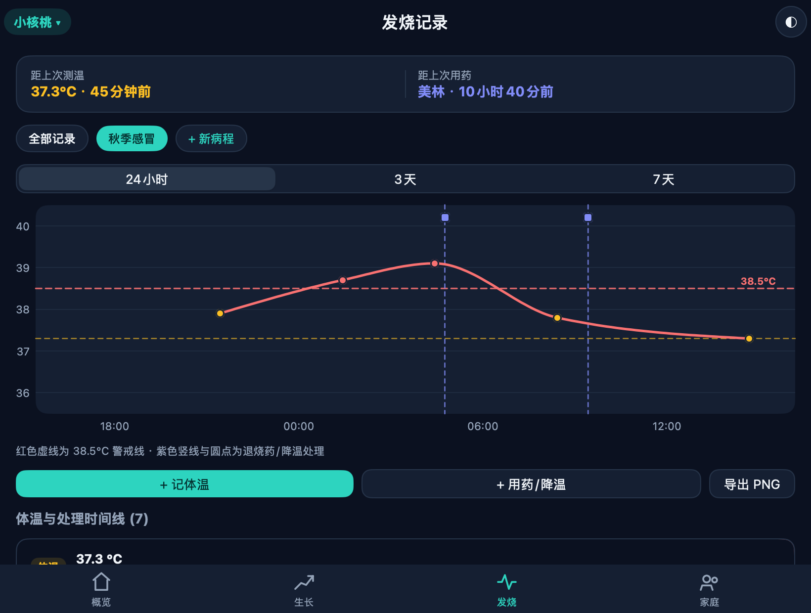

最新身高体重百分位、发烧状态提醒与四宫格快记入口
一套纯 Go 代码编译 iOS、Android、macOS 客户端（基于 egoist/mygo GPU Native UI），
离线可用，并支持自托管 Go + SQLite 同步服务端。

最新身高体重百分位、发烧状态提醒与四宫格快记入口

WS/T 423-2022 与 WHO 一键切换，展示 P3–P97 百分位色带

距上次测温/用药计时、38.5℃ 警戒线与退烧药时间点标注

自动适配 Material 导航与交互手感，支持自定义记录指标

支持按病程归档与 24h / 3天 / 7天查看，一键导出 PNG

支持家庭邀请码共享、局域网优先连接与外网自动切换

大屏查看历史测量走势与百分位参考带，鼠标悬停精确定位数据点

同套 Go 代码原生编译桌面版，支持 JSON / CSV / PNG 导出
内置国家卫健委 WS/T 423-2022 与 WHO LMS 百分位算法，一键切换；支持身高、体重、头围、BMI 及自定义指标。
顶部实时显示距上次测温与上次用药时长，体温曲线叠加 38.5℃ 警戒线与服药点，就诊回顾一目了然。
断网秒记；支持配置局域网直连地址与外网 HTTPS 备用地址，在家局域网毫秒同步，出门自动切外网。
服务端仅单一 Go + SQLite 二进制（~15 MB 内存），支持 Docker、Linux VPS、NAS、树莓派、macOS 与 Windows。
默认跟随系统浅色/深色外观，支持顶部一键切换深色模式，半夜测体温不刺眼。
生长曲线与发烧走势可一键渲染导出 1200×720 PNG 图片，另有完整 JSON 备份与 UTF-8 CSV 表格。
任何可长期在线的 Linux 服务器、NAS、树莓派、macOS 或 Windows 设备均可作为家庭同步节点（关闭公开注册后，家人仍可凭 6 位邀请码加入）：
# 方式 1：Docker Compose
docker compose -f deploy/docker-compose.yml up -d
# 方式 2：单二进制直接运行（从 Releases 下载对应平台版本）
./vita-server -addr :8420 -data ./data